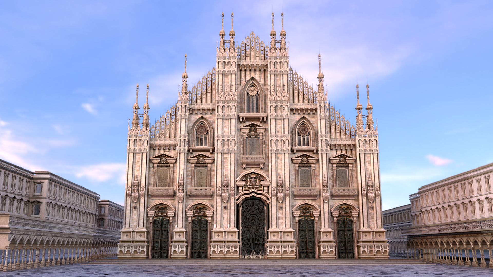

3D environments, characters, and real-time renders.

cathedral — full architectural reconstruction and render. Modeled in Autodesk Maya, textured in Substance Painter, rendered with RenderMan.portal room — real-time 3D environment. Modeled in Autodesk Maya, textured in Substance Painter, coded and rendered in Unity.